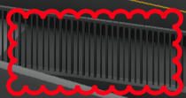
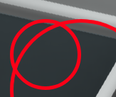

import os import sys sys.path.append(os.path.abspath('../FlairTestBed/')) import module_CommonResource ifLogin = 0 ifCloseChrome = 0 projectName = "Admin Building For Auto Testing" if(ifLogin): link = module_CommonResource.selectDevOrProd() module_CommonResource.openChrome() module_CommonResource.openFlair3DAndLogin(link) # After signing in module_CommonResource.searchForProjectAndOpen(projectName) module_CommonResource.selectAllAndOpenProject() module_CommonResource.clickOnViewHome() def checkMarkupWorkflow(): print "LOG: Start Markup Creation" bottomToolBarFirstSection = Pattern().targetOffset(1,0) print "LOG: doubleClick on roof to zoom to it" doubleClick(Pattern().targetOffset(140,-320)) print "LOG: Click outside to unselect" click(Pattern().targetOffset(-430,10)) print "LOG: # click on markup button" click(Pattern().targetOffset(530,0)) print "LOG: Check if the markup window opens up" assert exists(Pattern().targetOffset(1,0)), "ERROR: Markup dialog isn't visible." dropdownPosition = find(Pattern().targetOffset(55,-85)).getTarget() cloudMarkupOptionPosition = find(Pattern().targetOffset(70,-10)).getTarget() markUpNameTextBoxPosition = find(Pattern().targetOffset(-115,25)).getTarget() saveButtonPosition = find(Pattern().targetOffset(95,25)).getTarget() closeButtonPosition = find(Pattern().targetOffset(130,-130)).getTarget() circleMarkupOptionPosition = find(Pattern().targetOffset(65,-125)).getTarget() # Enable the edit mode. click(Pattern().targetOffset(-85,-85)) # Select dropdown click(dropdownPosition) print "LOG: Selecting the cloud markup" click(cloudMarkupOptionPosition) wait(0.5) drawLocation = module_CommonResource.getFlair3DLogoInTheApp().targetOffset(775, 725).getTargetOffset() dragDrop(drawLocation, Location(drawLocation.getX() + 200, drawLocation.getY() + 100)) # add a markup name and save click(markUpNameTextBoxPosition) # editable textbox assert exists(), "ERROR: Cloud markup messed while drawing" paste("Accessible Ramp") click(saveButtonPosition) # save # close the markup saved message module_CommonResource.closeThePopupMessages() click(closeButtonPosition) # close markup wait(0.5) # click on forge view home module_CommonResource.clickOnViewHome() # click on top view click(module_CommonResource.getFlairWindowControls().targetOffset(50, 75)) wait(0.5) # new markup a circle perhaps. print "LOG: Start with the Circle Markup now" print "LOG: doubleClick on second Panel of the top row of sunroof" doubleClick(Pattern().targetOffset(285,-515)) click(Pattern().targetOffset(-140,-70)) # click outside to unselect click(Pattern().targetOffset(530,0)) # click on markup button print "LOG: Check if the markup window opens up" assert exists(Pattern().targetOffset(1,0)), "ERROR: Markup dialog isn't visible." print "LOG: Enable the edit mode." click(Pattern().targetOffset(-85,-85)) # Select new markup click(dropdownPosition) # Select circle markup click(circleMarkupOptionPosition) wait(0.5) drawLocation = module_CommonResource.getFlair3DLogoInTheApp().targetOffset(1350, 225).getTargetOffset() print drawLocation dragDrop(drawLocation, Location(drawLocation.getX() + 200, drawLocation.getY() + 200)) dragDrop(drawLocation, Location(drawLocation.getX() + 100, drawLocation.getY() + 100)) # draw two so that we can easily identify print "LG: add a markup name and save the circle markup" click(markUpNameTextBoxPosition) # editable textbox assert exists(), "ERROR: Circle markup messed while drawing" paste("Roof Panel Position") click(saveButtonPosition) # save # close the markup saved message module_CommonResource.closeThePopupMessages() click(closeButtonPosition) # close markup # Check if both the markups are saved properly def checkMarkupsAreSavedCorrectly(): click(Pattern().targetOffset(530,0)) # click on markup button assert exists(Pattern().targetOffset(0,1)), "ERROR: Markups are not shown in the UI" # click on 1st markup and check if the view shows it appropriately click(Pattern().targetOffset(-85,-20)) # select 1st cloud markup assert exists((Pattern().similar(0.80))), "ERROR: Something wrong with the 1st cloud Markup" click(Pattern().targetOffset(-85,20)) # select second markup assert exists(), "ERROR: Something wrong with the 1st Markup" checkMarkupsAreSavedCorrectly() print ("INFO: Both markups seems correct. In the same session. Let's check for different session.") # Go to project view and open project again click(module_CommonResource.getFlair3DLogoInTheApp()) wait(0.5) type(Key.F5) # Refresh the page wait(2) module_CommonResource.searchForProjectAndOpen(projectName) module_CommonResource.selectAllAndOpenProject() # Now check if the markups are showing up in this session checkMarkupsAreSavedCorrectly() print ("INFO: Both markups seems correct in this session as well. Let's proceed to delete") # delete the markups. deleteFirstMarkupPosition = find(Pattern().targetOffset(115,-15)).getTarget() click(deleteFirstMarkupPosition) # delete first markup click(Pattern().targetOffset(35,60)) # confirm delete print "LOG: Now deleteing the remaining markup which should be at the place of 1st" click(deleteFirstMarkupPosition) # delete second markup click(Pattern().targetOffset(35,60)) # confirm delete assert not exists (Pattern().similar(0.90).targetOffset(1,0)), "ERROR: Markups are still showing in the UI" # Prepare to close. click(closeButtonPosition) # close markup print "LOG: First expand the models" # First expand the models."1577200523998.png" click(module_CommonResource.getFlair3DLogoInTheApp().targetOffset(-80, 172)) wait(0.5) checkMarkupWorkflow() if(ifCloseChrome): module_CommonResource.closeChrome() wait(0.5) Debug.log("TEST PASSED!!")